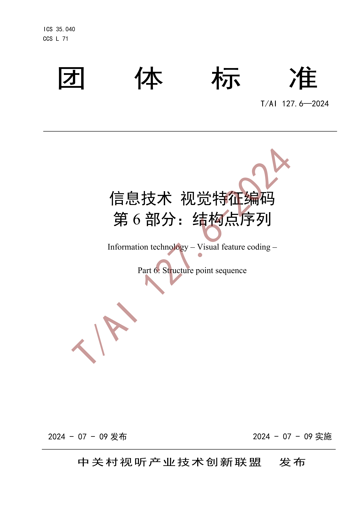
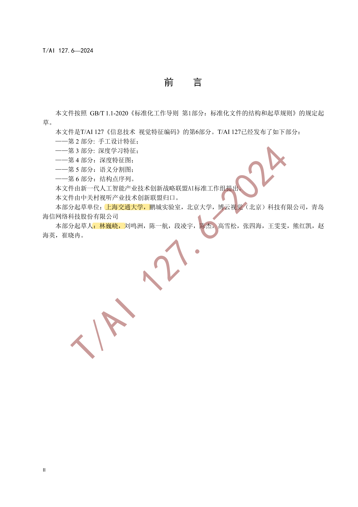
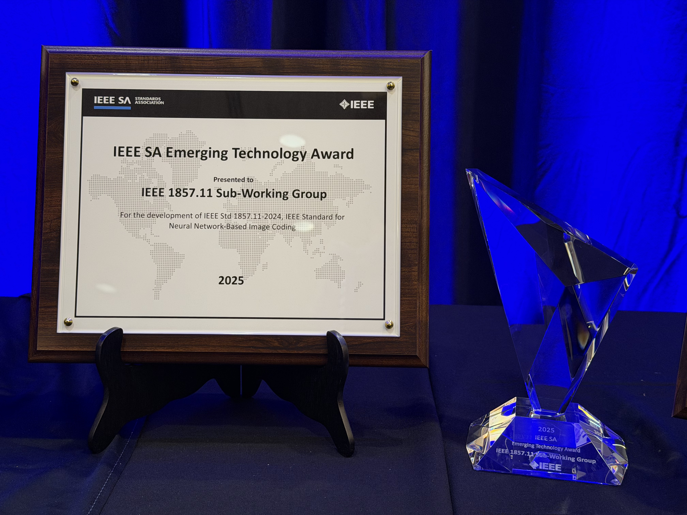
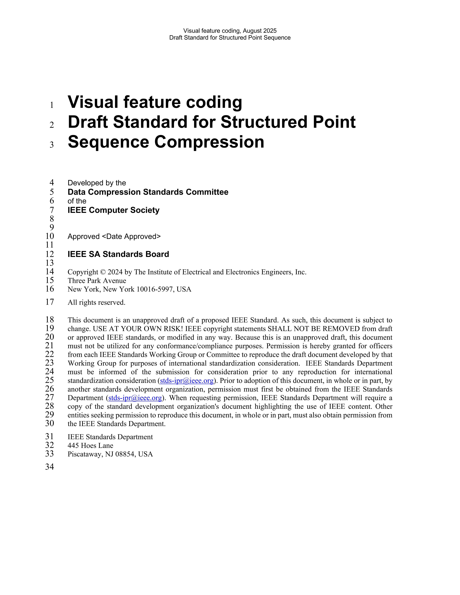

Certificates of Weiyao Lin’s Development of Standards
(1) Lead the establish of visual feature-coding standard


Certificate of the established T/AI 127.6-2024 visual feature-coding group standard and Weiyao Lin’s leading role as the standard’s leading drafter.
(2) Make outstanding contributions to IEEE 1857.11 standard and get the IEEE SA Emerging Technology Award

(3) Lead the establishing process of a sequence feature-coding standard in IEEE 3483 standardization group

Back to Certificates List